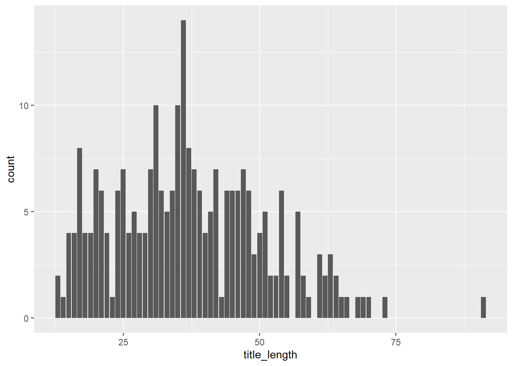
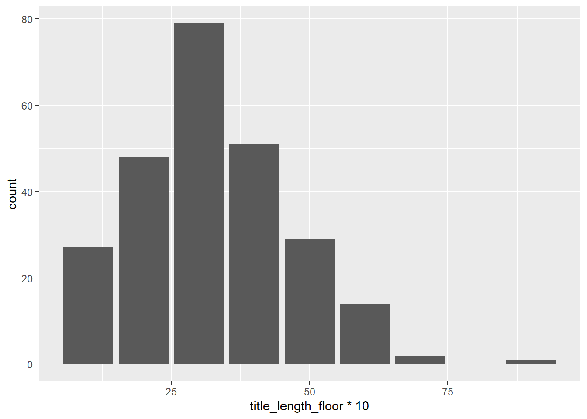
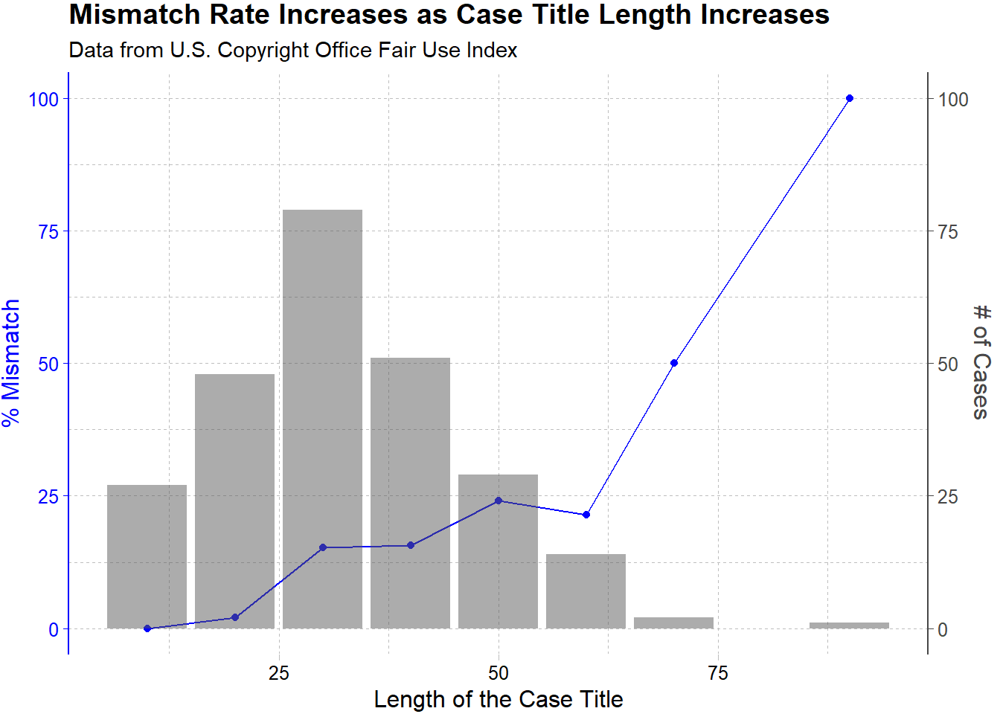
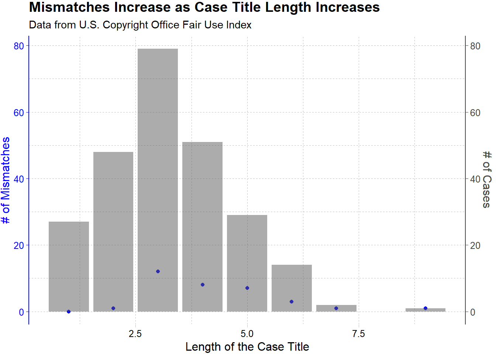
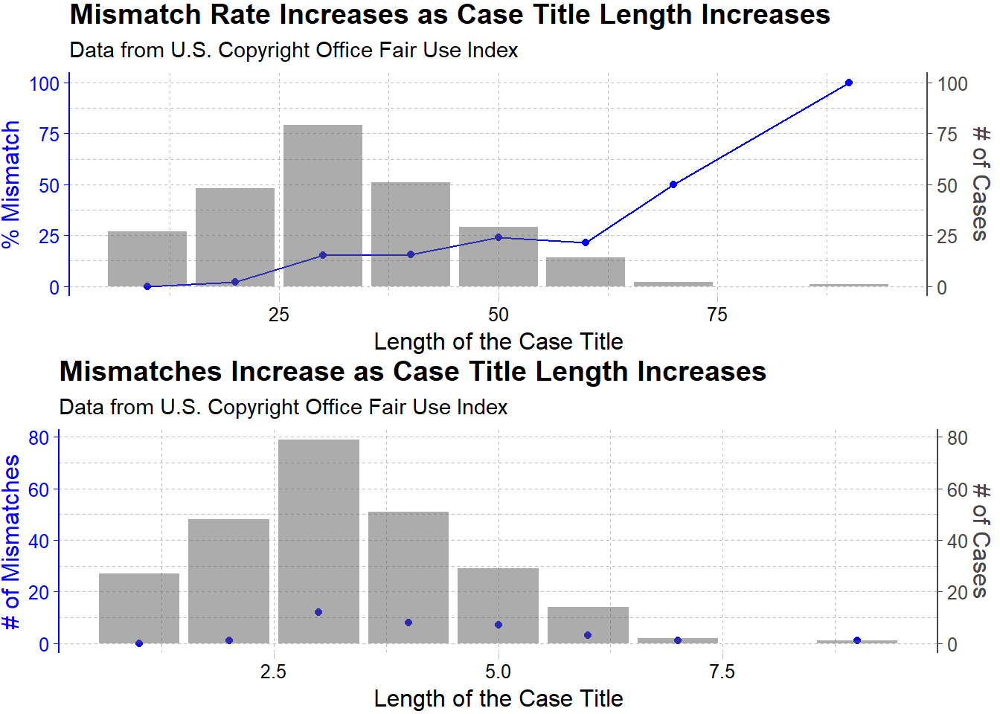

library(tidyverse) # who doesn't want to be tidy?
library(gt) # for nice tables
library(cowplot)
library(ggthemes)TidyTuesday 35: Fair Use Cases
Data-Viz
R
R-code
Code-Along
stringr
data cleaning
dual axis plot
ggplot2
cowplot
Intro/Overview
Today’s TidyTuesday concerns US copyright law. Fair use is the right to use copyrighted materials in certain cases. Fair use isn’t always clear and there is often litigation to decide if something is fair use or not. This week’s TidyTuesday uses a data set created by web scraping to get information about federal court cases on fair use. This week’s data comes with the following warning:
There are two datasets this week for which the rows align, but the values might not precisely line up for a clean join -- a case you often have to deal with in real-world data.
I think I want to do a visualization around that comment- what percentage of the data doesn’t precisely align and are there common types of mismatches?
Setting Up
Loading Libraries
Loading Data
Reading in the data using the tidytuesday package.
tuesdata <- tidytuesdayR::tt_load(2023, week = 35)--- Compiling #TidyTuesday Information for 2023-08-29 ------- There are 2 files available ------ Starting Download ---
Downloading file 1 of 2: `fair_use_cases.csv`
Downloading file 2 of 2: `fair_use_findings.csv`--- Download complete ---fair_use_cases <- tuesdata$fair_use_cases
fair_use_findings <- tuesdata$fair_use_findingsPreliminary EDA
Looking at the cleaning script, it appears that the fair_use_cases comes from the table found at copyright.gov. This table has some summary information about the case and a link to the court rulings (a pdf). The fair_use_findings dataframe contains additional information about the case that has been extracted from the pdf. Indeed, there are 251 rows in each dataframe and the way the dataframes are generated they should match up.
fair_use_cases %>%
head() %>%
gt()| case | year | court | jurisdiction | categories | outcome | fair_use_found |
|---|---|---|---|---|---|---|
| De Fontbrune v. Wofsy, 39 F.4th 1214 (9th Cir. 2022) | 2022 | 9th Circuit | 9th Circuit | Education/Scholarship/Research; Photograph | Fair use not found | FALSE |
| Sedlik v. Von Drachenberg, No. CV 21-1102 (C.D. Cal. May 31, 2022) | 2022 | C.D. Cal. | 9th Circuit | Painting/Drawing/Graphic; Photograph | Preliminary finding; Fair use not found | FALSE |
| Sketchworks Indus. Strength Comedy, Inc. v. Jacobs, No. 19-CV-7470-LTS-VF (S.D.N.Y. May 12, 2022) | 2022 | S.D.N.Y. | 2nd Circuit | Film/Audiovisual; Music; Parody/Satire; Review/Commentary | Fair use found | TRUE |
| Am. Soc'y for Testing & Materials v. Public.Resource.Org, Inc., No. 13-cv-1215 (D.D.C. Mar. 31, 2022) | 2022 | D.D.C. | District of Columbia Circuit | Education/Scholarship/Research; Textual Work; Used in government proceeding | Mixed Result | FALSE |
| Yang v. Mic Network Inc., Nos. 20-4097-cv, 20-4201-cv (2d Cir. Mar. 29, 2022) | 2022 | 2d Circuit | 2nd Circuit | News reporting; Photography | Fair use found | TRUE |
| Viacom Int’l v. Pixi Universal, Civ. Action No H-21-2612 (S.D. Tex. Mar. 25, 2022) | 2022 | S.D. Tex. | 5th Circuit | Painting/Drawing/Graphic; Parody/Satire | Fair use not found | FALSE |
Now the other dataframe.
fair_use_findings %>%
head() %>%
gt()| title | case_number | year | court | key_facts | issue | holding | tags | outcome |
|---|---|---|---|---|---|---|---|---|
| De Fontbrune v. Wofsy | 39 F.4th 1214 (9th Cir. 2022) | 2022 | United States Court of Appeals for the Ninth Circuit | Plaintiffs own the rights to a catalogue comprised of 16,000 photographs of Pablo Picasso’s work, which was originally compiled by Picasso’s friend in 1932 (the “Zervos Catalogue”). In 1995, after obtaining permission from Picasso’s estate to publish a work illustrating and describing works by Picasso, Defendants Alan Wofsy and his company Alan Wofsy & Associates began publishing The Picasso Project—–a series of volumes reproducing images of Picasso’s work, including 1,492 photographs from the Zervos Catalogue. Plaintiffs sued for copyright infringement. A French court held the photographs were protected by copyright because they “added creative features through deliberate choices of lighting, the lens, filters, [and] framing or angle of view.” In 2001, Plaintiffs obtained a judgment in France that subjected Defendants to damages for any further acts of infringement. In 2012, after discovering copies of The Picasso Project in a French bookstore, Plaintiffs enforced their judgment in France and were awarded €2 million. Plaintiffs sought recognition of the judgment in the U.S. courts. The district court granted summary judgment for Defendants, determining that the French judgment was “repugnant to U.S. public policy protecting free expression” because it failed to provide a fair use defense. Plaintiffs appealed; and Defendants cross-appealed on other defenses. | Whether reproduction of photographs documenting artwork in a reference book that was sold commercially is a fair use. | The panel held that the first factor, the purpose and character of the use, weighed against fair use because Defendants conceded that The Picasso Project was a commercial venture and the use at issue—reproduction of the photographs in a book illustrating Picasso’s works—was not transformative. Specifically, the court noted that Defendants’ use “did not serve an ‘entirely different function’ than the originals,” but had overlapping purposes, and the insertion of informative captions did not “necessarily” transform the works. The second factor, the nature of the copyrighted work, did not favor fair use because, although the works were published and documentary in nature, the French court had concluded that the photographs exhibited creative elements. The court determined that the third factor, the amount and substantiality of the work used, weighed against fair use because Defendants failed to demonstrate that “copying the entirety of each photograph was necessary.” The fourth factor, the effect of the use upon the potential market for or value of the copyrighted work, also weighed against fair use because there is a presumption of market harm when the use is commercial and non-transformative. Although Defendants presented evidence that auction prices for the Zervos Catalogue increased while The Picasso Project was on the market, Defendants had not provided evidence that “widespread appropriation” of the works would not harm the market for the photographs. Weighing all the factors, the court had “serious doubts” that fair use would protect Defendants’ use, and, accordingly, granted summary judgment to Plaintiffs on the public policy defense. | Education/Scholarship/Research; Photograph | Fair use not found |
| Sedlik v. Von Drachenberg | No. CV 21-1102, 2022 WL 2784818 (C.D. Cal. May 31, 2022) | 2022 | United States District Court for the Southern District of New York | Plaintiff Jeffrey Sedlik is a photographer who created an iconic portrait of musician Miles Davis, which he has licensed for various uses (the “Portrait”). Defendant Katherine Von Drachenberg, professionally known as Kat Von D, is a celebrity tattooist. In 2017, Kat Von D inked a tattoo on the arm of a friend, Blake Farmer, as a gift. Farmer chose the Portrait as the reference image for his tattoo. Kat Von D traced a printout of the Portrait to create a line drawing and stencil to transfer to Farmer’s arm, then completed the tattoo freehand. Kat Von D and the tattoo shop hosting her both posted a photograph of Kat Von D tattooing Farmer’s arm with the Portrait in the background, as well as a photograph of the finished tattoo. Kat Von D also posted a short video of herself inking the tattoo. Sedlik sued and moved for summary judgment on his claim of copyright infringement. Defendants moved for summary judgment, asserting fair use. | Whether use of a photograph as the reference image for a realistic tattoo is fair use. | Considering the first fair use factor, the purpose and character of the use, the court found triable issues as to the transformativeness and commercial nature of the work. The court rejected Kat Von D’s arguments that the tattoo was transformative because of Farmer’s personal connection to the image in the Portrait and by nature of it being permanently imprinted on Farmer’s body. The court concluded that a jury should determine whether the visual differences between the Portrait and the tattoo, such as additional shading and the elimination of the black background, are significant enough to render the tattoo transformative. The court also stated that a jury should decide whether Kat Von D’s use of the work was commercial, noting that she did not charge Farmer for the tattoo but could have derived an indirect economic benefit from promotion of the tattoo on social media. The court found that the second factor, the nature of the copyrighted work, favored fair use because although the Portrait is creative, it was published several decades ago and has been widely disseminated. The third factor, the amount and substantiality of the portion used, weighed against fair use because Kat Von D chose to copy certain expressive elements of the Portrait that were not necessary to achieve her stated purpose of expressing “a sentiment of melancholy.” On the fourth factor, the effect of the use upon the potential market for or value of the copyrighted work, while the court concluded the tattoo was not a substitute in the primary market for the Portrait, it found that Sedlik raised a triable issue as to whether a future market exists for licensing the Portrait for use in creating tattoos. Because the court found triable issues concerning the statutory factors, it declined to address a non-statutory factor raised by defendants—“fundamental rights of bodily integrity and personal expression”—and concluded that fair use in this case should be decided by a jury. | Painting/Drawing/Graphic; Photograph | Preliminary finding; Fair use not found |
| Sketchworks Indus. Strength Comedy, Inc. v. Jacobs | No. 19-CV-7470-LTS-VF, 2022 U.S. Dist. LEXIS 86331 (S.D.N.Y. May 12, 2022) | 2022 | United States District Court for the Southern District of New York | Plaintiff Sketchworks Industrial Strength Comedy, Inc. (“Sketchworks”) is a sketch comedy company that created and owns a copyright in Vape, a stage musical that is an alleged parody of the theatrical work and film, Grease. Vape follows the same characters along roughly the same story-arc and in the same setting as Grease and incorporates portions of the film’s music. Defendants are the trustees for the individual trusts of the co-authors of Grease. Just before Vape was scheduled to be performed, Defendants sent Sketchworks and the theater where Vape was to be performed cease and desist letters, and the performances were cancelled. Sketchworks brought an action against Defendants seeking a declaratory judgment that Vape constitutes fair use of Grease, asserting that Vape is a parody that uses millennial slang, pop culture references, and exaggeration to comment on Grease and criticize its misogynistic and sexist elements. Defendants disputed that Vape is a parody and asserted that it infringes their copyright in Grease. The parties cross- moved for judgment on the pleadings. | Whether the use of protected elements, including music, plot, characters, dialogue, and setting, from a theatrical work and film to create a parodic stage musical is fair use. | The court found that the first factor, the purpose and character of the use, favored fair use because Vape is a parody of Grease and is therefore transformative. Critical to this determination, the court found that Vape juxtaposed “familiar elements from Grease, such as the main characters and the plot arc, with alterations to the script and song lyrics” to highlight the experiences of Grease’s female characters and “comment on how misogynistic tendencies have both evolved since Grease was developed and remain the same.” The second factor, the nature of the copyrighted work, disfavored fair use because Grease’s creative expression fell “within the core of the copyright’s protective purposes.” The court, however, declined to give this factor much weight, reasoning that parodies typically copy publicly known, expressive works. The third factor, the amount and substantiality of the use, weighed in favor of fair use. Although Vape took “substantial elements” from Grease, the court found that “the taking was not excessive” because use of those elements was necessary to achieve Vape’s parodic purpose and communicate its criticism of certain aspects of Grease. The fourth factor, the effect of the use on the potential market for or value of the copyrighted work, also weighed in favor of fair use because any potential harm to Grease’s market value for derivatives was likely “minimal.” While Vape updated some of the language and cultural references from Grease, the court found that Vape “cannot be reasonably viewed as a derivative ‘sequel to, . . . or updated remake, of Grease,’” because its updates were done “in a spirit of mockery.” Further, the court commented that any effect on the demand for derivatives attributable to Vape’s “critical nature” is not remediable under copyright law. Weighing the four factors together, the court concluded that Vape constitutes a fair use of Grease and granted Sketchworks’ motion for judgment on the pleadings. | Film/Audiovisual; Music; Parody/Satire; Review/Commentary | Fair use found |
| Am. Soc'y for Testing & Materials v. Public.Resource.Org, Inc. | No. 13-cv-1215 (TSC), 2022 U.S. Dist. LEXIS 60922 (D.D.C. Mar. 31, 2022) | 2022 | United States District Court for the District of Columbia | Defendant Public.Resource.Org, Inc., a non-profit organization, has a mission to make the “law and other government materials more widely available so that people, businesses, and organizations can easily read and discuss [the] laws and the operations of government.” Plaintiffs consist of three non-profit standards-developing organizations: (1) “ASTM,” which is focused on industry-related technical and safety standards; (2) “NFPA,” which is focused on safety standards; and (3) “ASHRAE,” which is focused on construction-related standards. Plaintiffs own copyrights in various “voluntary consensus standards,” which are developed by numerous subject matter experts under Plaintiffs’ guidance. Plaintiffs sell PDFs and hard copies of their standards and maintain reading rooms for viewing the standards. Defendant purchased hard copies of Plaintiffs’ standards and, without authorization, scanned and made digital, verbatim, copies freely available online to the public. This case concerns 191 ASTM standards, 23 NFPA standards, and 3 ASHRAE standards that Defendant claims have been incorporated by reference into federal law. Plaintiffs brought copyright, trademark, and unfair competition claims; Defendant countersued, seeking declaratory judgment. The parties filed motions for summary judgment. In 2017, the district court found that all factors weighed against fair use. On appeal, the court of appeals reversed in part and remanded the case back to the district court without a detailed discussion of the fair use factors for additional factual development. On remand, both parties again moved for summary judgment. | Whether it is fair use to make available online for free a verbatim copy of privately developed standards, which have been incorporated by reference into law, without obtaining authorization from the copyright owner. | As directed by the court of appeals, the district court conducted a four-step fair use analysis for each of the 217 allegations of infringement, concluding that Defendant’s reproduction of 184 standards was fair use, reproduction of 32 standards was not fair use, and that portions of the reproduction of 1 standard was fair use. For all 217 standards, the court found that the fourth factor, the effect of the use upon the potential market for or value of the work, favored fair use. Having found that Defendant’s use was noncommercial, the court determined that Plaintiffs did not provide sufficient evidence to show some meaningful likelihood of future harm exists. The court noted that it was “less deferential” to Plaintiffs’ “conclusory opinions” about market harm given that, during the elapsed time since the alleged infringement and the commencement of the litigation Plaintiffs could have provided “economic data and analysis” supporting their arguments. The court also found that Defendant’s reproductions did not have a “substantially adverse impact on the potential market for the originals.” Regarding the 184 standards that the court found Defendant reproduced fairly, the court determined that 153 were incorporated by reference into law and that the other 31 were identical in text to standards incorporated by reference. The court concluded that the first factor, the purpose and character of the use, generally favored fair use because Defendant did not “stand to profit” from the reproduction and that its purpose was “to inform the public about the law and facilitate public debate.” The court noted that Defendant’s use qualified as one that “furthere[d] the purposes” of fair use, and generally provided information “essential for a private entity to comprehend its legal duties,” which weighed “heavily in favor” of fair use. In assessing the second factor, the nature of the copyrighted work, the court considered that “the express text of the law falls plainly outside the realm of copyright protection” and determined that consequently the standards incorporated by reference “are, at best, at the outer edge of ‘copyright's protective purposes.’” Thus, this factor weighed “heavily in favor” of fair use. The court explained that the 184 standards were incorporated into law “without limitation” such that “the consequence of the incorporation by reference is virtually indistinguishable from a situation in which the standard had been expressly copied into law.” The third factor, the amount and substantiality of the portion used, also favored fair use as the court found that “a greater amount of the standard's text might be fairly reproduced” because the incorporating regulations did “not specify” whether certain provisions, or the entire text, of the standards were incorporated by reference into law and did not indicate which specific provisions were “relevant for regulatory guidance.” Balancing the factors, the court found fair use and denied Plaintiffs’ motion for summary judgment regarding these 184 standards. Regarding the 32 standards that the court found were not reproduced fairly, the court noted that these standards were not shown to be incorporated by reference into law and “differ[ed] in substantive ways from those incorporated by reference into law.” Discussing the first factor, the court found that this factor weighed slightly against fair use because Defendant’s purpose of “inform[ing] the public about the law” was not “significantly furthered” by publishing standards with substantive differences from the standards that were incorporated by reference. The second factor weighed against fair use because there was no evidence showing that the standards were incorporated into law. And, although the standards were more factual than creative, the court concluded that these works “fall more squarely within the realm of copyright protection” than standards incorporated into law. The third factor weighed against fair use, as Defendant’s purpose of informing the public about the law “could be achieved with a paraphrase or summary.” The court also noted that “[i]ncorporating one standard by reference does not justify posting provisions of a different version that has not been incorporated into law.” Balancing these factors, the court did not find fair use and denied Defendant’s motion for summary judgment regarding these 32 standards. Regarding the 1 standard where the court found that portions of the reproduced standard were used fairly, only the parts incorporated by reference into a regulation were found to be fair use. In its second factor analysis, distinguishing the portions not incorporated into law, the court found that Defendant’s “wholesale reproduction” of the standard was “harder to justify” because only parts of the standard were incorporated into law. | Education/Scholarship/Research; Textual Work; Used in government proceeding | Mixed Result |
| Yang v. Mic Network Inc. | Nos. 20-4097-cv(L), 20-4201-cv (XAP), 2022 U.S. App. LEXIS 8195 (2d Cir. Mar. 29, 2022) | 2022 | United States Court of Appeals for the Second Circuit | Plaintiff Stephen Yang (“Yang”) licensed a photograph he took of Dan Rochkind (“Rochkind”) to the New York Post, which ran the photograph in an article about Rochkind entitled “Why I Won’t Date Hot Women Anymore.” Defendant Mic Network, Inc. (“Mic”) posted its own article entitled “Twitter Is Skewering the 'New York Post' for a Piece on Why a Man ‘Won't Date Hot Women’.” The Mic article included a screenshot of the Post article that captured the headline and a portion of Yang’s photograph. Mic did not obtain a license to use the photograph. In response, Yang sued Mic for copyright infringement, and Mic moved to dismiss, asserting fair use. The district court granted Mic’s motion, concluding that its use of Yang’s photograph was fair use. Yang appealed the order and judgment. | Whether using a screenshot from an article, including part of a photograph, to report on and criticize the article constitutes fair use of the photograph. | On appeal, the court decided that the first factor, the purpose and character of the use, weighed in favor of fair use. As an initial matter, the panel held that it was not error for the district to decide transformativeness on a motion to dismiss in this case because the only two pieces of evidence needed were the original and secondary works. The court held that, in addition to identifying the subject of Mic’s criticism, Mic, also transformed the photograph by critiquing and providing commentary on the Post article. Mic did not use the photograph “merely as an illustrative aid,” and thus its use was for different purpose than the original. The second factor, the nature of the copyrighted work, had limited weight in the court’s analysis after it held that the use was transformative and thus “d[id] not counsel against a finding of fair use.” Likewise, the third factor, the amount and substantiality of the work used, did not disfavor fair use as the court agreed with the district court’s conclusion that Mic’s use of the image was reasonable to satirize the Post article. The court determined that the fourth factor, the effect of the use on the potential market for or value of the work, also favored fair use. The court concluded that Mic’s screenshot was not a competing substitute for Yang’s work because Mic did not simply republish the photograph, but instead used a screenshot consisting of a “significantly” cropped version of the work along with the Post headline. Further, Yang failed to plausibly allege that a market exists for “photographs that happen to be featured in news articles criticizing the original article in which the photograph appeared.” Weighing the factors together, the court concluded that the district court properly dismissed Yang’s copyright infringement claim on fair use grounds. | News Reporting; Photography | Fair use found |
| Viacom Int’l v. Pixi Universal | Civ. Action No H-21-2612, 2022 U.S. Dist. LEXIS 57400 (S.D. Tex. Mar. 25, 2022) | 2022 | United States District Court for the Southern District of Texas | Plaintiff Viacom International Inc. (“Viacom”) is the owner of the SpongeBob SquarePants (“SpongeBob”) entertainment franchise and holds over 400 copyright registrations for SpongeBob works, including the animated television series, feature films, two-dimensional drawings, and stylebooks featuring extensive artwork from the franchise (the “Works”). The SpongeBob television series features a fictional fast-food restaurant called the “Krusty Krab,” which Viacom once recreated as an immersive experience at a comics convention in 2019. Defendant Pixi Universal, LLC (“Pixi”) operates themed “pop-up” restaurants and bars. In 2021, Pixi recreated the Krusty Krab as a pop-up called “The Rusty Krab,” which featured recreations of the fictional restaurant and other elements of the SpongeBob series. Pixi charged a fee for admission and for food and drink. After demanding that Pixi cease using SpongeBob intellectual property, Viacom brought copyright and trademark infringement claims and sought injunctive relief. Pixi asserted fair use as its sole defense to the copyright claim. | Whether using elements of copyrighted works to create a themed “pop-up” business based on those works is fair use. | The court decided that the first factor, the purpose and character of the use, weighed against fair use. The court found that Pixi’s use was wholly commercial and that it did not transform the Works by merely changing the medium of expression. Instead, Pixi’s use shared the same purpose as the original, that is, “light-hearted entertainment.” Rejecting Pixi’s “post-hoc characterization” of its pop-up as a parody, the court found that Pixi embraced, replicated, and intended to profit from the Works. The second factor, the nature of the copyrighted work, also weighed against fair use because of the “fictional, imaginative nature” of the Works. The third factor, the amount and substantiality of the work used, likewise weighed against fair use. The court determined that, although Pixi did not copy all the details of the SpongeBob universe or even specific episode storylines, Pixi’s use of “central, principal characters and iconic locals and backgrounds from the series” was nonetheless “substantial” as it used the “heart” of the Works. Lastly, the court determined that the fourth factor, the effect of the use on the potential market for or value of the work, also weighed against fair use. The court found that the type of immersive experience that Pixi created, which was based exclusively on Viacom’s SpongeBob franchise, affected the potential market for Viacom to venture into creating or licensing derivative immersive works. Because the factors together weighed against a finding of fair use, the court concluded that Viacom was likely to succeed on its copyright infringement claim and granted its motion for preliminary injunctive relief. | Painting/Drawing/Graphic; Parody/Satire | Fair use not found |
The case field in fair_use_cases should contain the information found in the fields title and case_number in the fair_use_findings dataframe. The court and jurisdiction from fair_use_cases should also somehow relate to the court listed in fair_use_findings.
I’m going to start with the case, title, case_number issue.
fair_use_cases %>%
select(case) %>%
head() %>%
gt()| case |
|---|
| De Fontbrune v. Wofsy, 39 F.4th 1214 (9th Cir. 2022) |
| Sedlik v. Von Drachenberg, No. CV 21-1102 (C.D. Cal. May 31, 2022) |
| Sketchworks Indus. Strength Comedy, Inc. v. Jacobs, No. 19-CV-7470-LTS-VF (S.D.N.Y. May 12, 2022) |
| Am. Soc'y for Testing & Materials v. Public.Resource.Org, Inc., No. 13-cv-1215 (D.D.C. Mar. 31, 2022) |
| Yang v. Mic Network Inc., Nos. 20-4097-cv, 20-4201-cv (2d Cir. Mar. 29, 2022) |
| Viacom Int’l v. Pixi Universal, Civ. Action No H-21-2612 (S.D. Tex. Mar. 25, 2022) |
It looks like the case number is formatted differently across the entries. This may be due to different style guides in different circuits/ courts?
Now look at the same information from the other dataframe.
fair_use_findings %>%
select(title, case_number) %>%
head() %>%
gt()| title | case_number |
|---|---|
| De Fontbrune v. Wofsy | 39 F.4th 1214 (9th Cir. 2022) |
| Sedlik v. Von Drachenberg | No. CV 21-1102, 2022 WL 2784818 (C.D. Cal. May 31, 2022) |
| Sketchworks Indus. Strength Comedy, Inc. v. Jacobs | No. 19-CV-7470-LTS-VF, 2022 U.S. Dist. LEXIS 86331 (S.D.N.Y. May 12, 2022) |
| Am. Soc'y for Testing & Materials v. Public.Resource.Org, Inc. | No. 13-cv-1215 (TSC), 2022 U.S. Dist. LEXIS 60922 (D.D.C. Mar. 31, 2022) |
| Yang v. Mic Network Inc. | Nos. 20-4097-cv(L), 20-4201-cv (XAP), 2022 U.S. App. LEXIS 8195 (2d Cir. Mar. 29, 2022) |
| Viacom Int’l v. Pixi Universal | Civ. Action No H-21-2612, 2022 U.S. Dist. LEXIS 57400 (S.D. Tex. Mar. 25, 2022) |
It looks like the title are styled in the same way. If the 5 entries here are representative of the dataset as a whole, then I don’t think joining these two files will be difficult.
I’m going to use str_detect() to match the title from the fair_use_findings data frame (the pattern) with the case name from the fair_use_cases (the string). This will return TRUE if the pattern is contained within the string and a FALSE otherwise. Note that this needs to be an exact match. There can be extract characters before or after the pattern in the string, but the pattern portion must match exactly.
I talk about this in more depth in a previous tidytuesday, where I joined data frames from Arlington County and the Historical Markers TidyTuesday dataset based on partial matches like these.
str_detect(string = fair_use_cases$case, pattern = fair_use_findings$title) [1] TRUE TRUE TRUE TRUE TRUE TRUE TRUE TRUE TRUE TRUE TRUE TRUE
[13] FALSE TRUE TRUE TRUE TRUE TRUE TRUE TRUE TRUE TRUE TRUE TRUE
[25] TRUE TRUE TRUE TRUE TRUE TRUE TRUE TRUE TRUE FALSE TRUE FALSE
[37] TRUE TRUE TRUE TRUE TRUE TRUE TRUE TRUE TRUE TRUE TRUE TRUE
[49] TRUE TRUE TRUE TRUE TRUE TRUE TRUE TRUE TRUE FALSE TRUE TRUE
[61] FALSE FALSE TRUE FALSE TRUE TRUE TRUE TRUE TRUE TRUE FALSE TRUE
[73] TRUE TRUE FALSE TRUE TRUE FALSE TRUE TRUE TRUE TRUE TRUE FALSE
[85] TRUE TRUE TRUE TRUE TRUE TRUE TRUE TRUE TRUE TRUE TRUE TRUE
[97] TRUE TRUE FALSE FALSE TRUE TRUE TRUE TRUE FALSE TRUE TRUE TRUE
[109] FALSE TRUE TRUE FALSE TRUE TRUE TRUE FALSE TRUE FALSE TRUE TRUE
[121] TRUE TRUE TRUE TRUE TRUE TRUE TRUE TRUE TRUE TRUE TRUE TRUE
[133] TRUE TRUE TRUE TRUE TRUE TRUE TRUE TRUE TRUE TRUE TRUE TRUE
[145] TRUE TRUE TRUE TRUE TRUE TRUE TRUE TRUE TRUE TRUE TRUE FALSE
[157] TRUE TRUE TRUE TRUE TRUE FALSE TRUE TRUE TRUE TRUE TRUE FALSE
[169] TRUE TRUE FALSE FALSE TRUE TRUE TRUE TRUE FALSE TRUE TRUE TRUE
[181] TRUE TRUE FALSE TRUE FALSE FALSE TRUE TRUE TRUE TRUE TRUE TRUE
[193] TRUE TRUE TRUE TRUE TRUE TRUE TRUE TRUE TRUE TRUE TRUE TRUE
[205] TRUE TRUE TRUE TRUE TRUE TRUE FALSE TRUE TRUE TRUE TRUE TRUE
[217] FALSE TRUE TRUE TRUE TRUE TRUE FALSE TRUE TRUE TRUE TRUE TRUE
[229] TRUE FALSE TRUE TRUE TRUE TRUE TRUE TRUE TRUE TRUE FALSE TRUE
[241] TRUE TRUE TRUE TRUE TRUE TRUE TRUE FALSE TRUE TRUE TRUEOkay, so some of them don’t match. How many and why?
matches_title <- str_detect(string = fair_use_cases$case, pattern = fair_use_findings$title) How many? Remember you can treat booleans as numbers so sum will give you the total number of correct matches and mean will give you the percentage of matches.
nrow(fair_use_cases)- sum(matches_title)[1] 33Only 33 cases didn’t match. I’m going to look at the ones that don’t match.
fair_use_cases$case[!matches_title] [1] "Nat'l Acad. of TV Arts & Scis., Inc., v. Multimedia Sys. Design, Inc. No. 20-CV-7269 (VEC) (S.D.N.Y. July 30, 2021)"
[2] "Tresóna Multimedia v. Burbank High School Vocal Music Ass’n, Nos. 17-56006, 17-56417, 17-56419 (9th Cir. Mar. 24, 2020)"
[3] "Cambridge Univ. Press v. Becker, No. No. 1:08-cv-1425-ODE (N.D. Ga. Mar. 2, 2020)"
[4] "Barcroft Media, Ltd. v. Coed Media Group, LLC, No. 16-CV-7634 (JMF) (S.D.N.Y. Nov. 2, 2017)"
[5] "Penguin Random House v. Colting, No. 17-cv-386 (S.D.N.Y. Sept. 8, 2017)"
[6] "Peteski Productions, Inc. v. Rothman, No. 5:17-CV-00122 (E.D. Tex. Aug. 30, 2017)"
[7] "Hosseinzadeh v. Klein, No. 16-CV-3081 (S.D.N.Y. Aug. 23, 2017)"
[8] "Paramount Pictures, Corp. v. Axanar Prods., Inc., No. 2:15-cv-09938-RGK-E (C.D. Cal. Jan. 3, 2017)"
[9] "Cambridge University Press v. Becker, 1:08-cv-01425-ODE (N.D. Ga. March 31, 2016)"
[10] "Katz v. Google Inc., No. 14-14525 (11th Cir. Sept. 17, 2015)"
[11] "Penguin Grp. (USA), Inc. v. Am. Buddha, No. 4:13-cv-02075-JGZ (D. Ariz. May 11, 2015)"
[12] "Bouchat v. Balt. Ravens Ltd. P'ship, 737 F.3d 932 (4th Cir. 2013)"
[13] "Fox Broad. Co. v. Dish Network, L.L.C., 723 F.3d 1067 (9th Cir. 2013)"
[14] "Faulkner Literary Rights, L.L.C. v. Sony Pictures Classics, Inc., 953 F. Supp. 2d 701 (N.D. Miss. 2013)"
[15] "Brownmark Films, L.L.C. v. Comedy Partners, 682 F.3d 687 (7th Cir. 2012)"
[16] "Northland Family Planning Clinic, Inc. v. Crt. for Bio-Ethical Reform, 868 F. Supp. 2d 962 (C.D. Cal. 2012)"
[17] "CCA and B, LLC v. F + W Media, Inc., 819 F. Supp. 2d 1310 (Ν.D. Ga. 2011)"
[18] "Bouchat v. Balt. Ravens Ltd. P'ship, 619 F.3d 301 (4th Cir. 2010)"
[19] "Veeck v. S. Bldg. Code Cong. Int’l, 241 F.3d 398 (5th Cir. 2001)"
[20] "Sony Computer Entm't. Inc. v. Connectix Corp., 203 F. 3d 596 (9th Cir. 2000)"
[21] "Castle Rock Entm’t, Inc. v. Carol Publ’g Grp., Inc., 150 F.3d 132 (2d Cir. 1998)"
[22] "Sundeman v. Seajay Soc’y, Inc., 142 F.3d 194 (4th Cir. 1998)"
[23] "L.A. News Serv. v. Reuters Television Int'l, Ltd., 149 F.3d 987 (9th Cir. 1998)"
[24] "Dr. Seuss Enters., L.P. v. Penguin Books USA, Inc., 109 F.3d 1394 (9th Cir. 1997)"
[25] "Metro-Goldwyn-Mayer, Inc. v. Am. Honda Motor Co., 900 F. Supp. 1287 (C.D. Cal. 1995)"
[26] "Rotbart v. J.R. O’Dwyer Co., No. 94 Civ. 2091 (JSM) (S.D.N.Y. Feb. 7, 1995)"
[27] "Nat’l Rifle Ass’n of Am. v. Handgun Control Fed’n of Ohio, 15 F.3d 559 (6th Cir. 1994)"
[28] "Educ. Testing Servs. v. Katzman, 793 F.2d 533 (3d Cir. 1986)"
[29] "Harper & Row Publishers, Inc. v. Nation Enters., 471 U.S. 539 (1985)"
[30] "Consumers Union, Inc. v. Gen. Signal Corp., 724 F.2d 1044 (2d Cir. 1983)"
[31] "Dow Jones & Co. v. Brd. of Trade of Chi., 546 F. Supp. 113 (S.D.N.Y. 1982)"
[32] "DC Comics, Inc. v. Crazy Eddie, Inc., No. 79 Civ. 3786 (PNL) (S.D.N.Y. Aug. 3, 1979)"
[33] "Eisenschiml v. Fawcett Publ’ns, Inc., 246 F.2d 598 (7th Cir. 1957)" Looking at these titles, there isn’t an obvious commonality. Some of them have accent marks or apostrophes in the names, but not all of them.
We know how these files were generated, so we might suspect that the same indexing would work for the other dataframe too.
fair_use_findings$title[!matches_title] [1] "Nat'l Acad. of TV Arts & Scis., Inc. v. Multimedia Sys. Design, Inc."
[2] "Tresóna Multimedia, LLC v. Burbank High School Vocal Music Ass’n"
[3] "Cambridge University Press v. Becker"
[4] "Barcroft Media, Ltd. V. Coed Media Group, LLC"
[5] "Penguin Random House LLC, et al. v. Frederik Colting and Melissa Medina, d/b/a Moppet Books"
[6] "Peteski Productions, Inc. v. Leah Rothman"
[7] "Matt Hosseinzadeh v. Ethan Klein and Hila Klein"
[8] "Paramount Pictures Corp. v. Axanar Prods., Inc."
[9] "Cambridge University Press v. Mark P. Becker"
[10] "Katz v. Google, Inc."
[11] "Penguin Grp. (USA), Inc. v. Am. Buddha,"
[12] "Bouchat v. Balt. Ravens Ltd. P’ship,"
[13] "Fox Broad. Co. v. Dish Network, LLC,"
[14] "Faulkner Literary Rights, LLC v. Sony Pictures Classics, Inc.,"
[15] "Brownmark Films, LLC v. Comedy Partners,"
[16] "Northland Family Planning Clinic, Inc. v. Ctr. for Bio-Ethical Reform,"
[17] "CCA and B, LLC v. F + W Media, Inc.,"
[18] "Bouchat v. Balt. Ravens Ltd. P’ship,"
[19] "Veeck v. S. Bldg. Code Congress Int’l,"
[20] "Sony Computer Entm’t, Inc. v. Connectix Corp.,"
[21] "Castle Rock Entm’t, Inc. v. Carol Publ. Group, Inc.,"
[22] "Sundeman v. The Seajay Soc’y, Inc.,"
[23] "L.A. News Serv. v. Reuters Television Int’l, Ltd.,"
[24] "Dr. Seuss Enters., LP v. Penguin Books USA, Inc.,"
[25] "Metro-Goldwyn-Mayer, Inc. v. Am. Honda Motor Co., Inc.,"
[26] "Rotbart v. J.R. O’Dwyer Co., Inc.,"
[27] "Nat'l Rifle Ass’n of Am. v. Handgun Control Fed’n of Ohio,"
[28] "Educ. Testing Serv. v. Katzman,"
[29] "Harper & Row Publishers, Inc. v. Nation Enterprises,"
[30] "Consumers Union of U.S., Inc. v. Gen. Signal Corp.,"
[31] "Dow Jones & Co., Inc. v. Bd. of Trade of the City of Chi.,"
[32] "DC Comics Inc. v. Crazy Eddie, Inc.,"
[33] "Eisenschiml v. Fawcett Publ’n, Inc.," So the index does work. Entry 33 is pretty clear- one has “Publ’ns, Inc.” and one has “Publ’n, Inc.”. The first entry has an extra comma in one file and not the other.
It actually looks like the comma thing might be a common reason they don’t match.
If I remove all commas, does my matching improve?
cases_no_comma <- fair_use_cases %>%
mutate(case = str_replace_all(case, ",", ""))
findings_no_comma <- fair_use_findings %>%
mutate(title = str_replace_all(title, ",", ""))
match_no_comma <- str_detect(string = cases_no_comma$case, pattern = findings_no_comma$title)How many?
251- sum(match_no_comma)[1] 29Okay, so that is 4 more matches.
I could go through and remove punctuation 1 by 1. That’s pretty tedious.
What if I match on the first 10 letters? Most of the punctuation is towards the middle or the end of the title. Ten is a wild guess based on looking at the data. I can’t match on the first word, because something like De would likely match on multiple names.
findings_trunc_10 <- fair_use_findings %>%
mutate(title_10 = str_sub(title, 1, 10))Now match.
match_trunc_10 <- str_detect(string = fair_use_cases$case, pattern = findings_trunc_10$title_10)How many?
251- sum(match_trunc_10)[1] 3Okay, so that seems to catch most of the errors.
So, as the title gets longer and more complicated, is it more likely to contain typos? I’m going to look at the length of the title vs. the chances it doesn’t match. I’m going to combine the two datasets so I’m working with a single dataframe. Again, I know how the two datasets were created (generated from the same table) so I know I can just cbind them. If the data came from different places, I’d need a different strategy.
First, I’m going to rename the columns that are shared between the two.
fair_use_cases <- fair_use_cases %>%
rename(year_cases = year) %>%
rename(court_cases = court)
fair_use_findings <- fair_use_findings %>%
rename(year_findings = year) %>%
rename(court_findings = court)Now combining them.
combined <- fair_use_cases %>%
cbind(fair_use_findings)I’m going to remove a bunch of columns I don’t care about.
combined <- combined %>%
select( -categories, -outcome, -fair_use_found, -key_facts, -issue, -holding, -tags, -outcome )Now, I calculate the length of the title.
combined <- combined %>%
mutate(title_length = nchar(title))What is the distribution of lengths?
combined %>%
ggplot(aes(title_length)) +
geom_bar()
I probably need to bin the lengths. I’m using floor, but you could use ceiling or round as well.
combined <- combined %>%
mutate(title_length_floor = floor(title_length/10))Plot the distribution again.
combined %>%
ggplot(aes(title_length_floor *10)) +
geom_bar()
That’s not a terrible distribution.
Now I’m creating a column to indicate if they match.
combined <- combined %>%
mutate(match = str_detect(case, title))Now group by the length. I’m calculating the number of records in each bin (n), the mismatch rate as a %, and the number of mismatches.
combined2 <- combined %>%
group_by(title_length_floor) %>%
summarise(mismatch_rate = (1 - mean(match))*100, n = n()) %>%
mutate(mismatch_count = (n * mismatch_rate/100))Dual axes plots can be tricky to understand and easy to mislead with. Just like a correlation plot, this is another type of plot that I’d probably reserve for internal use only.
Here’s the mismatch rate. Coincidentally the percentage range (0-100 %) and the count range (0-79) are roughly on the same scale, so I don’t need to do anything too weird with my dual axes.If I did, then the sec.axis can be scaled by a formula relative to the first.
p1 <- combined2 %>%
ggplot(aes(x = title_length_floor * 10)) +
geom_point(aes(y = mismatch_rate), color = "blue") +
geom_line(aes(y = mismatch_rate), color = "blue") +
geom_col(aes(y = n), alpha = 0.5) +
scale_y_continuous(name = "% Mismatch",
# Add a second axis and specify its features
sec.axis = sec_axis(trans = ~ . * 1, name = "# of Cases")) +
theme_pander() +
theme(
axis.title.y.left = element_text(colour = "blue"),
axis.line.y.left = element_line(color = "blue"),
axis.ticks.y.left = element_line(color = "blue"),
axis.text.y.left = element_text(colour = "blue"),
axis.title.y.right = element_text(colour = "gray28"),
axis.line.y.right = element_line(color = "gray28"),
axis.ticks.y.right = element_line(color = "gray28"),
axis.text.y.right = element_text(colour = "gray28")
) +
xlab("Length of the Case Title") +
ggtitle("Mismatch Rate Increases as Case Title Length Increases",
subtitle = "Data from U.S. Copyright Office Fair Use Index")
p1
The two largest bins have very few records, so I wouldn’t expect that extremely high error rate to persist as more data is added. However, there does seem to be an increasing mismatch rate with length of the title.
combined2 %>% gt()| title_length_floor | mismatch_rate | n | mismatch_count |
|---|---|---|---|
| 1 | 0.000000 | 27 | 0 |
| 2 | 2.083333 | 48 | 1 |
| 3 | 15.189873 | 79 | 12 |
| 4 | 15.686275 | 51 | 8 |
| 5 | 24.137931 | 29 | 7 |
| 6 | 21.428571 | 14 | 3 |
| 7 | 50.000000 | 2 | 1 |
| 9 | 100.000000 | 1 | 1 |
Here’s looking at the same information, but just in terms of counts.
p2 <- combined2 %>%
ggplot(aes(x = title_length_floor)) +
geom_point(aes(y = mismatch_count), color = "blue") +
geom_col(aes(y = n), alpha = 0.5) +
scale_y_continuous(name = "# of Mismatches",
# Add a second axis and specify its features
sec.axis = sec_axis(trans = ~ . * 1, name = "# of Cases")) +
theme_pander() +
theme(
axis.title.y.left = element_text(colour = "blue"),
axis.line.y.left = element_line(color = "blue"),
axis.ticks.y.left = element_line(color = "blue"),
axis.text.y.left = element_text(colour = "blue"),
axis.title.y.right = element_text(colour = "gray28"),
axis.line.y.right = element_line(color = "gray28"),
axis.ticks.y.right = element_line(color = "gray28"),
axis.text.y.right = element_text(colour = "gray28")
) +
xlab("Length of the Case Title") +
ggtitle("Mismatches Increase as Case Title Length Increases",
subtitle = "Data from U.S. Copyright Office Fair Use Index")
p2
Make a composite figure with cowplot.
plot_grid(p1, p2, ncol = 1)
Citation
BibTeX citation:
@online{e. sinks2023,
author = {E. Sinks, Louise},
title = {TidyTuesday 35: {Fair} {Use} {Cases}},
date = {2023-08-29},
url = {https://lsinks.github.io/posts/},
langid = {en}
}
For attribution, please cite this work as:
E. Sinks, Louise. 2023. “TidyTuesday 35: Fair Use Cases.”
August 29, 2023. https://lsinks.github.io/posts/.